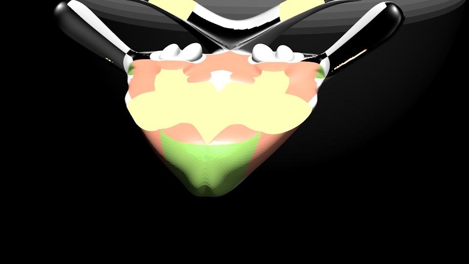
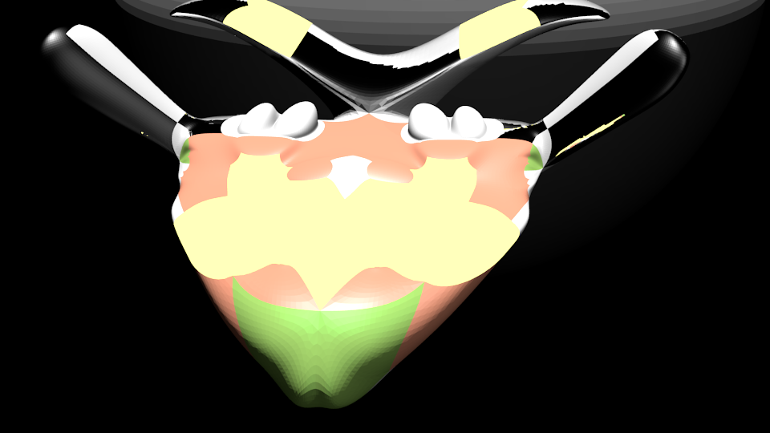

I was 27, I had a ship, Akra, and a name. I'd heard about Sphincs,
a bandit that operated in the Thespian system.
I didn't know what he had done
to piss off the temple, but it must have been big because Thebes
was a suprisingly valuable prize, especially since I had been an envoy for
only 8 months, a merit I had quite literally acquired.
It had been expensive, but it opened the kind of legal routes a young enterprising
business person could use to make himself very rich...and special connections,
like a personal call from her Eternity herself, hight priestess of
the temple of Apollo. I didn't really believe she knew the future, but
I certainly believed she had enough pull to decide what the future
would be, which came to the same.
At least there was payment, I felt lucky. She could have told
to go and kill Sphyncs without even so much as a please and thank you...
and I would have had to do it just the same